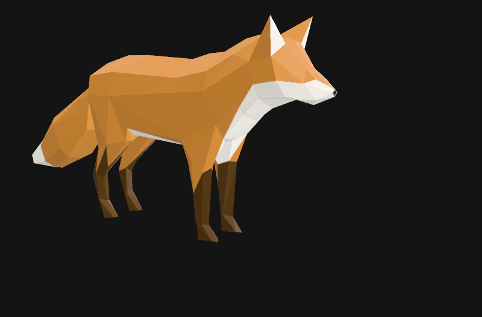
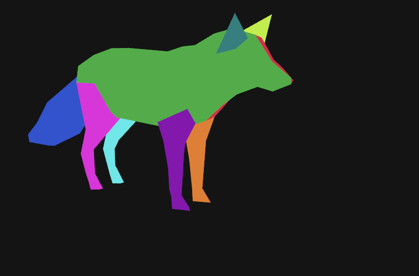
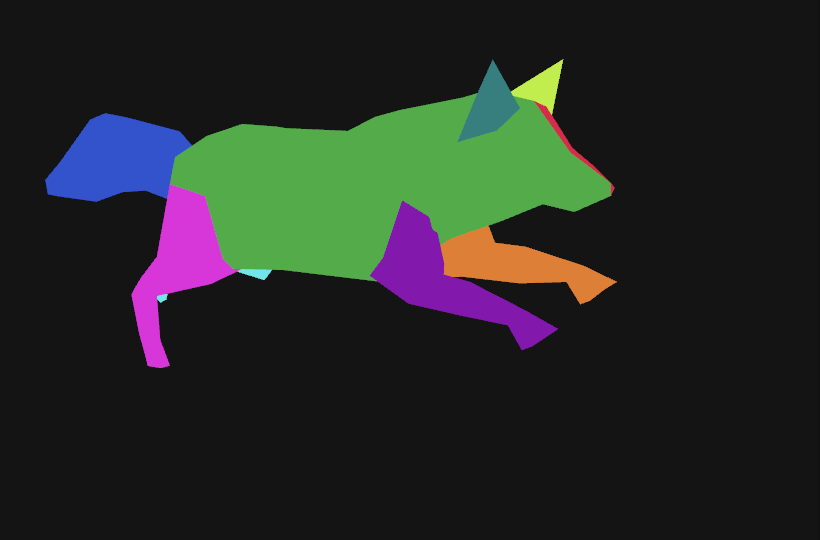
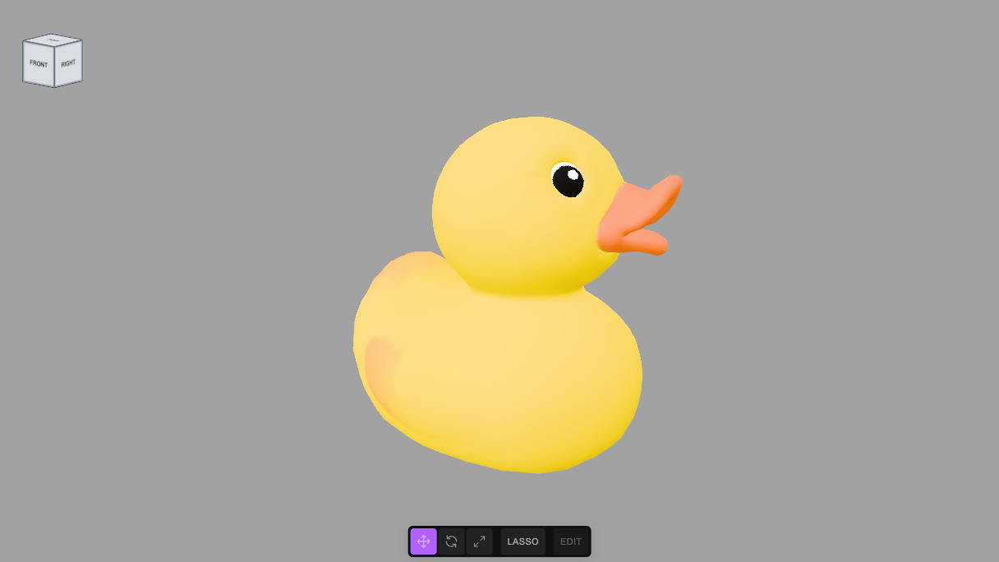
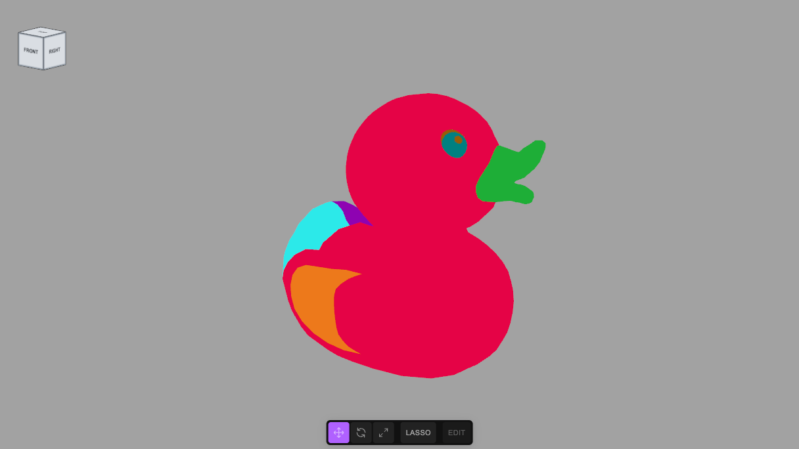
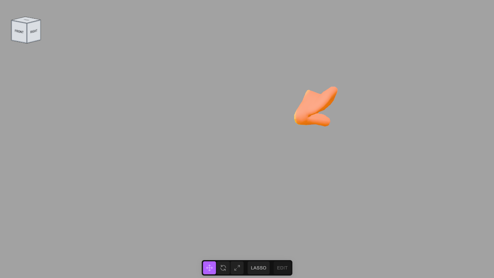
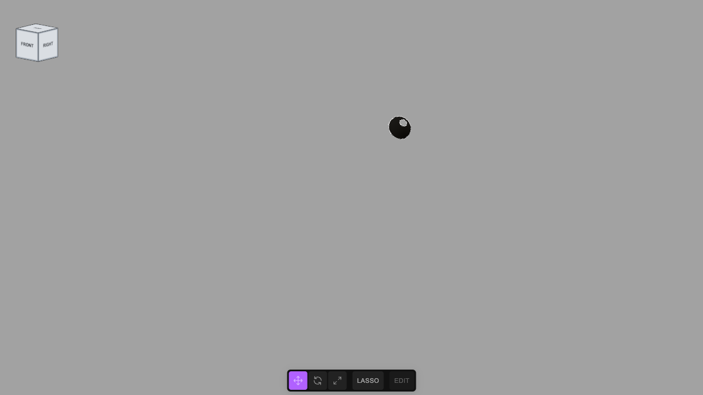
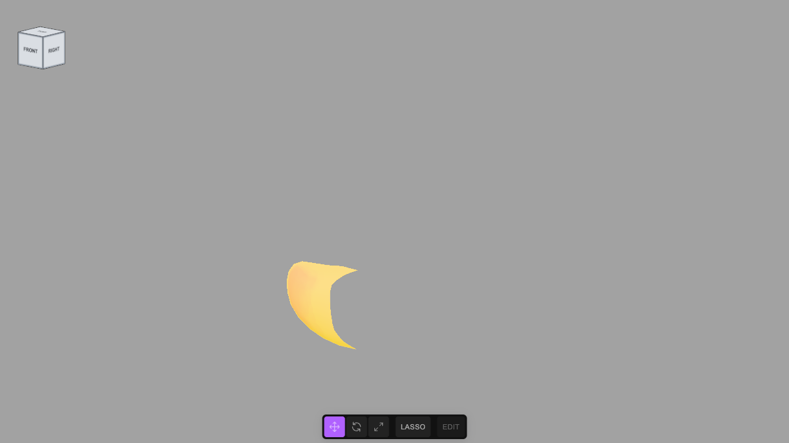
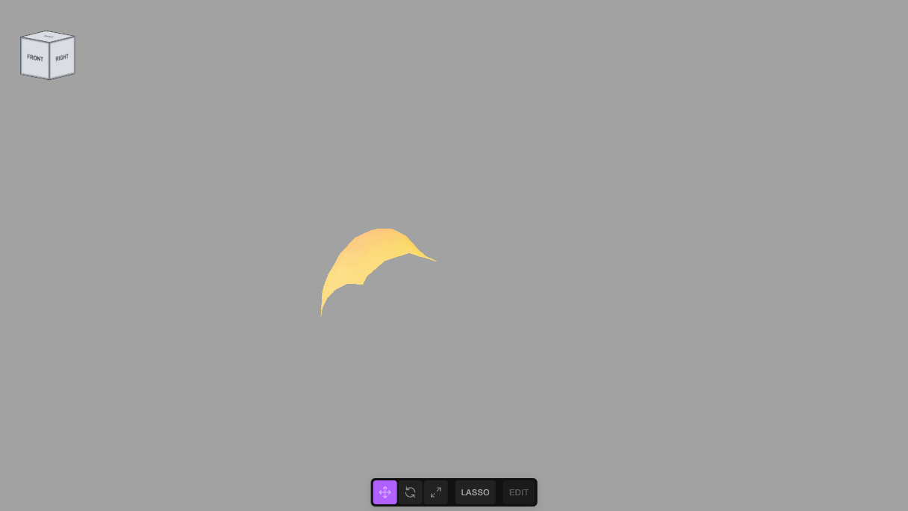

Cut any textured mesh into named parts
A model usually arrives as one mesh with one material, so nothing in the scene says "this is the beak". The editor's SEG tool cuts such a mesh into separate named, classed meshes in one undo step, from the evidence the file carries: which pieces of the texture are separate patches, and what colours are painted on them. This page uses it three times: on an avocado, where the file practically labels itself; on a toy duck, where you have to read the evidence and decide; and on an animated fox, a skinned mesh, where the cut must leave the skeleton and its animations alone. It also says where the method stops. Built with the JS Shell.
SEG is a Shell global, with no setup. If you want to see what it does written out by hand, the older tutorial Cut an avocado into named parts, building the tool by hand builds the same thing step by step. The reference is guides/MESH_SEGMENT.md.SEG.describe reports components in the world frame and SEG places the unnamed pieces itself. See Cut a scene into named parts.1 The idea, and how far it goes
A mesh has no idea what its triangles are, but two things in the file do carry hints. UV islands: an artist unwraps a model into patches of one texture image, and a patch that shares no vertices with any other is often a whole part (a seed, a beak, a wing). Painted colour: inside one patch, a ring of orange and a ring of cream are different things even though the triangles are all alike. SEG reports both, you decide what each piece is, and SEG.split cuts exactly there. It does not recognise anything: the names come from you (or from an AI that you show the report to), and it never loses a triangle.
The 3D advantage. The parts are only separable because the object is three-dimensional data: you can isolate the beak, see from behind that the cut is where you think it is, and tell the left wing from the right by where its centre sits in space. The report says that in one column.
It works when the model is one indexed mesh with UVs and a base-colour texture, and its parts are laid out as separate islands or are painted in clearly different colours. It does not work when the mesh has no UVs, or only vertex colours or one flat colour (there is no evidence to read); when a part shares an island and a colour with its neighbour (a boundary nobody painted cannot be found); or when the model has several materials or morph targets (SEG refuses these, and says why, rather than break them; a mesh with several materials is better cut with SEG.byMaterial, step 10). A skinned mesh is cut, with its skeleton kept (step 5), but cannot be divided by colour with subdivide. And even when it works, it does not decide what an island is: the duck below has ten islands for about six parts, and you have to merge them.
2 The models, and their licences
All three are from the Khronos glTF Sample Models archive, retrieved 27 and 28 October 2026. Download the .glb files, then File → Import (or drop one in the viewport), accepting the import dialog's defaults. Import one at a time into an empty scene.
| Model | Source | Licence |
|---|---|---|
| Avocado | Avocado.glb, Microsoft; 8.3 MB, one mesh of 682 triangles, three 2048 × 2048 textures | CC0 1.0 (public domain dedication) |
| Duck | Duck.glb, Copyright 2006 Sony Computer Entertainment Inc.; 120 KB, one mesh of 4,212 triangles, one 512 × 512 texture | SCEA Shared Source License 1.0: free to use, modify and redistribute, derivatives must carry the licence and notices and identify the modifications, as is, with no warranty |
| Fox | Fox.glb, low poly fox by PixelMannen, rigging and animation by @tomkranis, glTF conversion by @AsoboStudio and @scurest; 163 KB, one skinned mesh of 576 triangles, 24 bones, three clips, one texture | Two licences in one file: the model is CC0 1.0; the rigging and animation are CC BY 4.0 and need attribution, which a record's source.attribution carries |
duck.json in tejaswigowda/test1 is committed with the full licence text (licenses/SCEA-Shared-Source-License-1.0.txt) and a notice (licenses/duck-NOTICE.md) that gives the copyright line and lists the modifications: the one mesh cut into ten, two eyes subdivided, a light added. The texture and material are unchanged. If you publish a scene made from the duck, do the same. The avocado needs nothing, but the page credits it.3 The easy case: the avocado
Import Avocado.glb. The scene holds one mesh, Avocado, inside a wrapper node named after the file. Ask for the report:
SEG.describe('#Avocado')island 0: 483 triangles, texture u 0.01,0.67 v 0.01,0.76, size 0.043,0.063,0.022, at 0.50,0.50,0.61, colours rgb(54,102,10) 65% rgb(85,139,38) 34% rgb(96,170,4) 1%
island 1: 158 triangles, texture u 0.70,0.97 v 0.00,0.33, size 0.019,0.027,0.006, at 0.50,0.45,0.12, colours rgb(132,66,22) 48% rgb(181,119,51) 41% rgb(207,155,85) 11%
island 2: 41 triangles, texture u 0.54,0.98 v 0.35,1.00, size 0.042,0.061,0.000, at 0.49,0.50,0.22, colours rgb(220,221,107) 46% rgb(52,107,2) 39% rgb(113,186,22) 14%Read it as evidence. Island 0 is the biggest, dark green: the skin. Island 1 is small and brown: the seed. Island 2 has a thickness of 0.000 (the third number of size), so it is flat, and it holds cream, dark green and lime: the cut face. Its 41 triangles are far too coarse to follow the rings painted on it, so the plan subdivides it and sorts the small triangles by colour. The at column is the island's centre across the whole mesh, 0 to 1 on x, y, z: the seed sits at the back of the mesh (z 0.12), the cut face just in front of it.
// Island 0 (483 triangles, dark green, the biggest) is the outside: the skin. Island 1 (158, brown, small, at the back of the mesh in z) is the seed.
// Island 2 has thickness 0.000: it is flat, so it is the cut face, painted dark green (the rim), cream and lime (the flesh) and yellow-orange (the hollow).
// The flat face is far too coarse (41 triangles) to follow those rings, so it is subdivided four times (41 x 256) and each small triangle goes to the
// nearest palette colour; two colours may share one name.
// The source is required: a segmentation is a derivative work, and its record says what it derives from and under what licence.
SEG.split('#Avocado', {
group: 'Avocado_Fruit', classes: ['fruit', 'avocado'],
source: {
url: 'https://raw.githubusercontent.com/KhronosGroupArchives/glTF-Sample-Models/d7a3cc8e51d7c573771ae77a57f16b0662a905c6/2.0/Avocado/glTF-Binary/Avocado.glb',
sha256: '85ae91e60ed519f53a7e2096508837fedd446dcc450f8e05678b7a204679bd12',
bytes: 8328156,
licence: 'CC0 1.0 Universal',
attribution: 'Microsoft (Khronos glTF Sample Models: Avocado)'
},
parts: [
{ island: 0, name: 'Avocado_Skin', classes: ['skin', 'peel'] },
{ island: 1, name: 'Avocado_Pit', classes: ['pit', 'seed'] },
{ island: 2, subdivide: 4, palette: [
{ name: 'Avocado_Pit_Cavity', classes: ['cavity', 'flesh-cut'], color: [247, 212, 86] },
{ name: 'Avocado_Pit_Cavity', classes: ['cavity', 'flesh-cut'], color: [245, 175, 70] },
{ name: 'Avocado_Flesh', classes: ['flesh', 'edible', 'flesh-cut'], color: [203, 227, 119] },
{ name: 'Avocado_Flesh', classes: ['flesh', 'edible', 'flesh-cut'], color: [113, 185, 21] },
{ name: 'Avocado_Skin_Edge', classes: ['skin', 'peel-edge', 'flesh-cut'], color: [52, 107, 2] } ] }
]
})Avocado_Skin: 483 triangles | Avocado_Pit: 158 triangles | Avocado_Pit_Cavity: 2286 triangles | Avocado_Flesh: 6195 triangles | Avocado_Skin_Edge: 2015 trianglesThe cut face went from 41 triangles to 10,496 (41 × 44); that is the price of a boundary that follows the paint, and the boundary is as ragged as the paint is. SEG.preview('#Avocado_Fruit') paints each part a flat colour so you can check it (step 7 does this on the duck); here the cavity, flesh, seed and rim were all where they should be. The finished scene is avocado.json, and a tutorial that builds the whole tool by hand on this avocado is here.

4 The hard case: the duck
Start again with an empty scene and import Duck.glb. First look at what the importer gave you, then at the report:
// What did the importer give us? One mesh, wrapped in two nameless nodes, and a camera the file carried.
// Then the description of the mesh: one line per island, largest first, with its size, where its centre sits across the whole mesh (0 to 1 on x, y, z)
// and its main colours.
const list = []; scene.traverse(o => { if (o !== scene) list.push(o.type + ' ' + (o.name || '(unnamed)')); });
list.join('\n') + '\n\n' + SEG.describe('#LOD3spShape')Group Duck.glb
Object3D (unnamed)
Mesh LOD3spShape
PerspectiveCamera (unnamed)island 0: 2532 triangles, texture u 0.83,0.97 v 0.46,0.60, size 153.687,154.041,115.150, at 0.47,0.50,0.50, colours rgb(255,216,0) 100%
island 1: 882 triangles, texture u 0.84,0.98 v 0.64,0.80, size 35.060,33.478,46.304, at 0.89,0.73,0.40, colours rgb(255,127,0) 98% rgb(255,163,0) 2% rgb(255,189,0) 0%
island 2: 160 triangles, texture u 0.03,0.72 v 0.02,0.49, size 63.264,45.328,12.817, at 0.41,0.24,0.94, colours rgb(255,214,0) 58% rgb(255,188,0) 23% rgb(255,200,0) 20%
island 3: 160 triangles, texture u 0.03,0.72 v 0.03,0.49, size 63.248,44.110,12.691, at 0.41,0.23,0.06, colours rgb(255,214,0) 54% rgb(255,188,0) 25% rgb(255,201,0) 20%
island 4: 138 triangles, texture u 0.63,0.98 v 0.03,0.44, size 10.149,13.927,10.728, at 0.80,0.83,0.65, colours rgb(0,0,0) 66% rgb(255,255,255) 33% rgb(142,142,142) 1%
island 5: 138 triangles, texture u 0.63,0.98 v 0.03,0.44, size 13.382,14.072,6.043, at 0.72,0.82,0.22, colours rgb(0,0,0) 66% rgb(255,255,255) 33% rgb(113,113,113) 1%
island 6: 76 triangles, texture u 0.03,0.42 v 0.44,0.96, size 30.104,52.185,46.208, at 0.09,0.38,0.32, colours rgb(255,215,0) 78% rgb(255,198,0) 12% rgb(255,189,0) 11%
island 7: 62 triangles, texture u 0.04,0.42 v 0.44,0.96, size 31.217,52.005,43.767, at 0.09,0.38,0.69, colours rgb(255,216,0) 77% rgb(255,191,0) 15% rgb(255,203,0) 8%
island 8: 36 triangles, texture u 0.46,0.86 v 0.53,0.98, size 28.316,29.575,44.034, at 0.20,0.45,0.33, colours rgb(255,214,0) 64% rgb(255,200,0) 26% rgb(255,188,0) 11%
island 9: 28 triangles, texture u 0.48,0.85 v 0.53,0.98, size 28.674,27.768,41.070, at 0.21,0.46,0.68, colours rgb(255,214,0) 67% rgb(255,202,0) 21% rgb(255,190,0) 11%Ten islands, for a toy with a body, a head, a beak, two wings, a tail and two eyes. Reading them is the work, and the report gives you what you need:
| Island | Evidence | Decision |
|---|---|---|
| 0 | 2,532 triangles, 154 high, at 0.47, 0.50, 0.50: the middle of the mesh in every direction; one colour, yellow, 100% | The body and the head, as a single island: the file does not separate them, and the tool cannot |
| 1 | 882 triangles, orange 98%, at x 0.89: the front | The beak |
| 2, 3 | 160 triangles each, 63 long but only 12.7 wide (flat), yellow, at z 0.94 and 0.06: one on each side | The wings. The duck faces +x with y up, so its right is +z: island 2 is the right wing, 3 the left |
| 4, 5 | 138 triangles each, black 66%, white 33%, at y 0.83, z 0.65 and 0.22: high on the head, one on each side | The eyes, each painted with a black eye and a white highlight. Divide each by colour |
| 6, 8 and 7, 9 | 76 + 36 and 62 + 28 triangles, yellow, at x 0.09 to 0.21: the back, z 0.32 and 0.69 | The tail, in two pieces on each side: merge each pair with a list, island: [6, 8] |
Two things in this table are the real lesson. The islands do not map one to one onto the parts: the tail is four islands and the body and head are one. And two of the decisions rest on the at column (left from right) and on a colour split (the eyes) that no amount of automatic cutting could have guessed. Now the plan:
// Reading the description. The beak island is the orange one (882 triangles, centre at x 0.89, the front). The two big flat ones at z 0.06 and 0.94
// are the wings, one a side. The two 138-triangle islands (black and white in the texture) are the eyes, at z 0.22 and 0.65. The small pairs at x 0.09
// and 0.20 are the tail, in two pieces on each side. The biggest island, 2532 triangles at the middle of the mesh, is the body and the head in one.
// The duck faces +x with y up, so its right is +z and its left -z, which is how the "at" column tells left from right.
// Each eye is divided by colour: the black is the eye itself, the white is the highlight painted on it.
// The source is required: a segmentation is a derivative work, and its record says what it derives from and under what licence.
SEG.split('#LOD3spShape', {
group: 'Duck', classes: ['toy', 'duck'],
source: {
url: 'https://raw.githubusercontent.com/KhronosGroupArchives/glTF-Sample-Models/d7a3cc8e51d7c573771ae77a57f16b0662a905c6/2.0/Duck/glTF-Binary/Duck.glb',
sha256: '65bf938f54d6073e619e76e007820bbf980cdc3dc0daec0d94830ffc4ae54ab5',
bytes: 120484,
licence: 'SCEA Shared Source License 1.0',
attribution: 'Copyright 2006 Sony Computer Entertainment Inc.'
},
parts: [
{ island: 0, name: 'Duck_Body_And_Head', classes: ['body', 'head'] },
{ island: 1, name: 'Duck_Beak', classes: ['beak'] },
{ island: 3, name: 'Duck_Wing_Left', classes: ['wing', 'left'] },
{ island: 2, name: 'Duck_Wing_Right', classes: ['wing', 'right'] },
{ island: [6, 8], name: 'Duck_Tail_Left', classes: ['tail', 'left'] },
{ island: [7, 9], name: 'Duck_Tail_Right', classes: ['tail', 'right'] },
{ island: 5, subdivide: 2, palette: [
{ name: 'Duck_Eye_Left', classes: ['eye', 'left'], color: [1, 1, 1] },
{ name: 'Duck_Eye_Highlight_Left', classes: ['eye-highlight', 'left'], color: [253, 253, 253] } ] },
{ island: 4, subdivide: 2, palette: [
{ name: 'Duck_Eye_Right', classes: ['eye', 'right'], color: [1, 1, 1] },
{ name: 'Duck_Eye_Highlight_Right', classes: ['eye-highlight', 'right'], color: [253, 253, 253] } ] }
]
})Duck_Body_And_Head: 2532 triangles | Duck_Beak: 882 triangles | Duck_Wing_Left: 160 triangles | Duck_Wing_Right: 160 triangles | Duck_Tail_Left: 112 triangles | Duck_Tail_Right: 90 triangles | Duck_Eye_Left: 1478 triangles | Duck_Eye_Highlight_Left: 730 triangles | Duck_Eye_Right: 1489 triangles | Duck_Eye_Highlight_Right: 719 trianglesTen parts: 3,936 triangles for the ones taken whole, and the eyes, 276 triangles that were subdivided into 16 each, 4,416, so 8,352 in all (4,212 before). The two eyes keep their own pieces of the texture, so they still look as before.
5 A model that moves: the fox
Start again with an empty scene and import Fox.glb. It is a different kind of mesh: one skinned mesh, fox, bound to a skeleton of 24 bones, with three animation clips (Survey, Walk, Run) that move the bones, not the mesh. Cutting such a mesh must not disturb any of that, and SEG (1.4.0 and later) keeps it: every part is a skinned mesh bound to the same skeleton with the original bind matrix, and the bone indices and weights of every vertex are copied unchanged. Ask for the report:
SEG.describe('#fox')island 0: 113 triangles, texture u 0.03,0.62 v 0.59,0.87, size 11.633,41.573,108.111, at 0.73,0.67,0.65, colours rgb(219,135,42) 61% rgb(255,250,242) 38% rgb(37,37,37) 1%
island 1: 113 triangles, texture u 0.03,0.62 v 0.29,0.57, size 11.532,41.573,108.111, at 0.27,0.67,0.65, colours rgb(219,135,41) 61% rgb(255,250,242) 38% rgb(37,37,37) 1%
island 2: 37 triangles, texture u 0.03,0.13 v 0.02,0.26, size 5.941,42.613,16.433, at 0.80,0.27,0.69, colours rgb(83,52,16) 62% rgb(219,135,41) 38%
island 3: 37 triangles, texture u 0.71,0.81 v 0.33,0.59, size 5.941,42.613,16.433, at 0.20,0.27,0.69, colours rgb(83,52,16) 62% rgb(219,135,41) 38%
island 4: 35 triangles, texture u 0.31,0.45 v 0.02,0.24, size 7.257,43.023,23.791, at 0.73,0.27,0.39, colours rgb(83,52,16) 54% rgb(219,135,42) 43% rgb(255,250,242) 3%
island 5: 35 triangles, texture u 0.84,0.98 v 0.03,0.24, size 7.257,43.023,23.791, at 0.27,0.27,0.39, colours rgb(83,52,16) 54% rgb(219,135,41) 43% rgb(255,250,242) 3%
island 6: 34 triangles, texture u 0.16,0.26 v 0.03,0.21, size 7.119,37.464,16.107, at 0.64,0.24,0.69, colours rgb(83,52,16) 53% rgb(255,250,241) 27% rgb(219,135,41) 21%
island 7: 34 triangles, texture u 0.66,0.97 v 0.64,0.79, size 8.723,42.240,47.285, at 0.67,0.45,0.15, colours rgb(219,135,41) 73% rgb(255,250,242) 27%
island 8: 34 triangles, texture u 0.85,0.95 v 0.35,0.52, size 7.119,37.464,16.107, at 0.36,0.24,0.69, colours rgb(83,52,16) 53% rgb(255,250,242) 27% rgb(219,136,42) 20%
island 9: 34 triangles, texture u 0.67,0.98 v 0.82,0.97, size 8.622,42.240,47.285, at 0.33,0.45,0.15, colours rgb(219,135,41) 73% rgb(255,250,242) 27%
island 10: 31 triangles, texture u 0.48,0.61 v 0.02,0.27, size 4.767,49.749,23.791, at 0.87,0.31,0.39, colours rgb(83,52,16) 54% rgb(219,135,41) 45% rgb(128,80,24) 1%
island 11: 31 triangles, texture u 0.69,0.81 v 0.03,0.28, size 4.767,49.749,23.791, at 0.13,0.31,0.39, colours rgb(83,52,16) 56% rgb(219,135,41) 44%
island 12: 4 triangles, texture u 0.14,0.24 v 0.90,0.98, size 7.908,14.626,10.364, at 0.84,0.91,0.87, colours rgb(219,135,41) 75% rgb(255,250,242) 25%
island 13: 4 triangles, texture u 0.02,0.11 v 0.89,0.98, size 7.908,14.626,10.364, at 0.16,0.91,0.87, colours rgb(219,135,41) 70% rgb(255,250,242) 25% rgb(233,181,121) 5%Fourteen islands, in seven left and right pairs. This is an object report, not a scene report, although the mesh is one welded surface (all fourteen islands touch in space, so there is one component and nothing for the scene grain to say): when the components come to one, SEG.describe reports islands. The sizes are in the mesh's own units, which are not the scene's (the importer scaled the file by 0.01293). Reading it:
| Island | Evidence | Decision |
|---|---|---|
| 0, 1 | 113 triangles each, 108 long (the whole length of the animal), at x 0.73 and 0.27, orange and 38% cream | The body and the head, one island on each side: the file does not separate them. The same compound as the duck |
| 7, 9 | 34 triangles each, 47 long, at z 0.15 (the back), at y 0.45, orange with 27% cream | The tail, half on each side: merge them, island: [7, 9] |
| 2, 6 and 3, 8 | 37 + 34 and 37 + 34 triangles, tall and thin, at z 0.69 (the front), at y 0.24 to 0.27, brown 53 to 62% | The front legs, two islands each (the leg and the paw) |
| 4, 10 and 5, 11 | 35 + 31 and 35 + 31 triangles, tall and thin, at z 0.39, brown 54% | The hind legs, two islands each |
| 12, 13 | 4 triangles each, at y 0.91 (the highest), at z 0.87 (the front) | The ears |
Which side is left? Not from the colours, which are mirrored: from at z. The tail islands sit at z 0.15 and the ears and front legs at 0.87 and 0.69, so the fox faces +z with y up, and its left is +x: the islands with at x above 0.5 (0, 2, 4, 6, 7, 10, 12) are the left side and the others the right. Now the plan, with the source computed by SEG.source (the Shell has no top-level await, so keep the result in a variable):
SEG.source('https://raw.githubusercontent.com/KhronosGroupArchives/glTF-Sample-Models/d7a3cc8e51d7c573771ae77a57f16b0662a905c6/2.0/Fox/glTF-Binary/Fox.glb', {
licence: 'CC0 1.0 Universal (model, PixelMannen); CC BY 4.0 (rigging and animation, @tomkranis)',
attribution: 'Low poly fox by PixelMannen (CC0); rigging and animation by @tomkranis on Sketchfab (CC BY 4.0); glTF conversion by @AsoboStudio and @scurest (Khronos glTF Sample Models: Fox)'
}).then(s => { window.src = s })// The fox faces +z with y up (the tail is at z 0.15, the ears and front legs at 0.87 and 0.69), so its left is +x: the islands with "at x" above 0.5.
// Islands 0 and 1 are the body and the head together (113 triangles each, as long as the animal): the file does not separate them.
// The legs are two islands each (the leg and the paw), the tail is one island on each side, and the ears are the 4-triangle pair at the top.
SEG.split('#fox', {
group: 'Fox_Parts', classes: ['animal', 'fox'],
source: window.src,
parts: [
{ island: 0, name: 'Fox_Body_And_Head_Left', classes: ['body', 'head', 'left'], basis: ['position', 'size'] },
{ island: 1, name: 'Fox_Body_And_Head_Right', classes: ['body', 'head', 'right'], basis: ['position', 'size'] },
{ island: [7, 9], name: 'Fox_Tail', classes: ['tail'], basis: ['position', 'size', 'colour'] },
{ island: [2, 6], name: 'Fox_Front_Leg_Left', classes: ['leg', 'front', 'left'], basis: ['position', 'colour'] },
{ island: [3, 8], name: 'Fox_Front_Leg_Right', classes: ['leg', 'front', 'right'], basis: ['position', 'colour'] },
{ island: [4, 10], name: 'Fox_Hind_Leg_Left', classes: ['leg', 'hind', 'left'], basis: ['position', 'colour'] },
{ island: [5, 11], name: 'Fox_Hind_Leg_Right', classes: ['leg', 'hind', 'right'], basis: ['position', 'colour'] },
{ island: 12, name: 'Fox_Ear_Left', classes: ['ear', 'left'], basis: ['position', 'size'] },
{ island: 13, name: 'Fox_Ear_Right', classes: ['ear', 'right'], basis: ['position', 'size'] }
]
})Fox_Body_And_Head_Left: 113 triangles | Fox_Body_And_Head_Right: 113 triangles | Fox_Tail: 68 triangles | Fox_Front_Leg_Left: 71 triangles | Fox_Front_Leg_Right: 71 triangles | Fox_Hind_Leg_Left: 66 triangles | Fox_Hind_Leg_Right: 66 triangles | Fox_Ear_Left: 4 triangles | Fox_Ear_Right: 4 trianglesNine parts, 576 triangles, none lost (the geometry is not changed at all: there is no subdividing here). The importer's wrapper survives this time, because it holds the skeleton as well as the mesh: Fox.glb, root and the 24 bones (_rootJoint and 23 joints named b_…). They are real parts of the model and must stay, so give them a class instead of removing them, and the gate passes:
scene.getObjectByName('Fox.glb').traverse(o => tagClass(o, 'rig')) // the wrapper and every bone: .rig
requireLabels(true)requireLabels on: every object is named and classed

SEG.preview('#Fox_Parts'), seen from the fox's right: green is the right body and head, blue the tail, magenta the right hind leg (cyan the left, behind it), purple the right front leg (orange the left), teal the right ear.
Run clip posed on the cut fox: every part follows the bones. Nothing in the animation was touched.What is different about a skinned mesh. The parts are skinned meshes sharing one skeleton, so the clips (which target bones by name) drive all nine. One thing is refused: dividing a skinned island by colour with subdivide (as the duck's eyes were). A subdivided triangle has new vertices halfway along its edges, and a vertex halfway between two bones has no bone index of its own; SEG says so and stops, rather than average the indices and attach the new vertex to the wrong bone. A palette with subdivide: 0 is allowed: it sorts whole triangles. What it cannot do: the head is not cut from the body, because the file gives them one island and one set of colours. The skeleton does separate them (in the left part, 100 of its 339 vertices have b_Head_05 as their strongest bone, and they are exactly the front ones: z 40.7 to 66.6 in the mesh's units, against up to 36.3 for the rest), but SEG reads islands and colours, not weights, so the name stays a compound and the record's signals.compound_names lists it. The cream tail tip and chest are paint on a part, not parts.
6 Tidy up, and turn the gate on
The importer's wrapper (a node named after the file, an empty node and a camera the file carried) is all that is left of the original, and it is nameless and classless, which the labelling gate would refuse. Remove it, add a light to see by, and call requireLabels(true). (SEG.split removes the wrappers that hold only the mesh; this file's wrapper held a camera too.)
// The importer's wrapper (a node named after the file, an empty node and the camera the file carried) is all that is left of the original, and it is
// nameless and classless, so the gate would refuse the scene. Remove it, add a light to see by, and turn the gate on.
editor.execute(new RemoveObjectCommand(editor, scene.getObjectByName('Duck.glb')));
const sun = new THREE.DirectionalLight(0xfff1dd, 2.6); sun.name = 'KeyLight'; sun.position.set(80, 200, 160); sun.userData.customClasses = ['light'];
const sky = new THREE.HemisphereLight(0xdde6ff, 0x6a78c8, 1.4); sky.name = 'FillLight'; sky.userData.customClasses = ['light'];
editor.execute(new AddObjectCommand(editor, sun));
editor.execute(new AddObjectCommand(editor, sky));
requireLabels(true) // from here on a commit is refused while any object is unnamed, duplicated or classless7 Check the cut
A cut is only as good as the decision behind it, so look at it. SEG.preview gives every part its own flat colour, in one undoable step; isolate shows only one selector; SEG.restore() puts the textured material back.
SEG.preview('#Duck') // every part its own flat colour
isolate('#Duck_Beak') // only the beak
isolate('.eye') // only the two eyes (not their highlights)
isolate('.wing')
isolate('.left') // a wing, a tail piece, an eye and its highlight: everything on the left
showAll()
SEG.restore() // the textured materials, back


isolate('#Duck_Beak').
isolate('.eye'): the eyes, without their highlights. Only the right one faces this camera.
isolate('.wing'): the wing on this side; the other is behind the body.
isolate('.tail').
isolate('.left') seen from the right: only the parts that stick out past the body.Orbit while previewing: a cut that looks right from the front can be wrong behind. Undo walks back through all of it, and a single undo of the split restores the importer's original, one mesh and its wrappers.
8 What it refuses
A plan that would lose or duplicate something is refused before anything changes, and the message says what to fix. These are the real messages, from this duck:
SEG.split('#LOD3spShape', { group: 'Duck', classes: ['toy'], parts: [{ island: 0, name: 'Duck_Body', classes: ['body'] }] })
// SEG.split: every island must go to a part, and 9 of 10 have none
// ... island: 0 twice SEG.split: island 0 is used twice
// ... name: 'Mesh' SEG.split: every part needs a name an author chose, and "Mesh" is a default
// ... classes: [] SEG.split: part "Duck_All" needs at least one class
// ... no source in the plan SEG.split: the plan needs a source: { url, licence, attribution, sha256, bytes }. A segmentation is a derivative work, and its record must say what it derives from, under what licence, and which exact file
// ... the github.com/…/blob/main/… link SEG.split: source.url is a web page (blob/), not the file, and nothing can fetch it. Use https://raw.githubusercontent.com/KhronosGroupArchives/glTF-Sample-Models/<commit sha>/2.0/Duck/glTF-Binary/Duck.glb and put the page in source.page
// ... a raw url with main in it SEG.split: source.url names "main", which is a ref that moves: if the file changes, the record points at different geometry and nothing says so. Pin the commit: replace it with the 40-character sha of the commit you took the file from
// ... no sha256 SEG.split: source.sha256 is missing or is not 64 hex digits. It is the hash of the original file: it is how a record whose link has died is re-attached to a copy and checked to be the same mesh. Compute it with SEG.source(url, { licence, attribution }), or `shasum -a 256 file`The source is the part of a record that has to stay true after this page is gone, so it is held to a stricter standard than the rest: the file itself (a blob/ link is a web page nothing can fetch), pinned to a commit (main moves, and when the upstream file changes the record would silently point at different geometry), and hashed (so that if the link dies, a re-hosted copy can be checked to be the same mesh). You do not have to work out the hash: SEG.source(rawUrl, { licence, attribution }).then( s => { window.src = s } ) fetches the file, hashes it and measures it in the browser, and source: window.src goes in the plan. (The Shell has no top-level await; a promise's result is shown when it settles.) For the two models here the numbers above were checked twice: with shasum -a 256 on a download, and by the CI script's own fetch (for both), and with SEG.source in the editor (for the duck).
It also refuses a node that is not a mesh, a skinned mesh divided by colour with subdivide (a new vertex has no bone index; step 5), a mesh with morph targets, and a colour cut on a mesh with no UVs or no base-colour texture. A mesh with several materials is not refused as a dead end: it is sent to SEG.byMaterial (step 10), which is better evidence than islands.
9 What the asset records
The cut is verifiable by anyone who has the file: the triangles are conserved and the parts do not overlap. The naming is only as good as what it was made from, so SEG.split writes that into the asset, on the Duck node's userData.segmentation (it travels in the scene file and in an exported .glb as extras):
| Field | What it holds |
|---|---|
source | The original model, as a file that can be fetched and checked: url (raw, pinned to a commit), page (the human link), sha256 and bytes, plus its licence and attribution. Required: the plan's source is refused without them, because a segmentation is a derivative work. SEG cannot check that the licence and credit you give are right; they are your statement. The hash and size can be checked, by anyone, by fetching the file again, and CI does |
modifications | What was done to the model, written by SEG: the cut, any subdivision (138 to 2,208 triangles on each eye), that the material and texture are unchanged; plus anything the plan's modifications adds |
plan | The plan as given, verbatim: islands, subdivision, palette colours, names, classes |
describe | The report the decision was made from: the islands with their sizes, centres and colours |
parts, seg_version | Triangles per part, and the version of SEG that cut it |
signals | Facts that may one day be worth refusing on, recorded and not acted on: the number of islands, the number of parts, the share of the surface the largest part covers (0.779 here), and compound names (Duck_Body_And_Head) |
verification | { status: 'seeded', reviews: [] } when SEG writes it: nobody has looked yet. A review appends one entry (who, when, confirmed or corrected, anchored or blind, and exactly which labels changed), so agreement is as visible as disagreement. See the guide |
Every part also has its own descriptors, written when it is made, and its color is the colour of the texture under that part, with the main clusters and their shares, not of the whole atlas. The duck's beak is orange (#ff7e00), its eyes black (#000000), the highlights white (#ffffff) and its body yellow (#ffd800); the avocado's skin, pit, cavity and flesh are #47791c, #af6f2e, #f8d24d and #bfe36e. The material's own colour (one value for all parts, because they share it) is kept separately as materialColor. To see it, $S('#Duck_Beak').nodes[0].userData.descriptors.color.
The record is enough to do it again. Import the original model, and run the recorded plan:
const rec = $S('#Duck').nodes[0].userData.segmentation // or the record from a scene or a .glb
editor.history.undo() // (here, back to the single mesh)
SEG.replay('#LOD3spShape', rec)
// replayed: all 10 parts match the recordSEG.replay first checks that the mesh is the one the record describes (the same islands, triangle counts, sizes and colours) and refuses, before changing anything, if it is not: for example the record has 10 islands and this mesh has 12; island 0 has 2280 triangles, the record says 2532. It then cuts, and refuses if any part has a different count from the record. This was run, in the editor, with the duck's record in its current form (pinned and hashed source) against a fresh import of Duck.glb, and all ten parts matched. A record made before SEG 1.3.0 has a source that floats and is not hashed; replaying it would make a new record with the same flaw, so SEG.replay asks for the pinned one: SEG.replay('#LOD3spShape', rec, { source: window.src }).
10 A mesh with several materials
Some formats (OBJ with a material library, for example) give one mesh several materials. That is the best case, not the worst: the author of the model assigned each triangle to a material, so there are no seam artefacts and no guessing. SEG.describe lists the materials; SEG.byMaterial cuts one part per material, named from the material's own name (or from the plan's parts: [ { material: 0, name, classes } ]). Every material must go to a part, and the mesh's groups must cover every triangle. The same record is written (with method: 'material'), the geometry is unchanged, and each part keeps its own material. A part can be cut further with SEG.split if it is textured. Checked on a six-material crate standing on a shelf: six parts, the group placed under the shelf in the same world position, undo restoring the crate, and a replay matching the record. (The glTF importer makes a separate mesh for every material, so glTF models arrive already cut this way.)
11 Use the parts
The point of the exercise is what you can now say. Anything that works on a selector works on a part: recolour, hide, animate, or let an AI edit "make the beak red" resolve to a mesh instead of a guess.
$S('#Duck_Beak').recolor('#e11') // the beak
$S('.wing') // both wings
$S('.eye.left') // the left eye only
$S('.tail').scale(1.3) // both tail pieces12 Your own model
- Import it, and find its mesh (
list = []; scene.traverse(o => o.isMesh && list.push(o.name))). SEG.describe('#name'). If it says no uv or no texture, stop: there is nothing to read. If every island has the same colours and a similar size, expect to merge.- Write the table, as in step 4: island, evidence, decision. Use
sizeto tell flat from solid,atto tell left from right and front from back, and the colours to find painted regions. - Write the plan, with its
source; start with whole islands andSEG.preview. Only then add colour cuts, with the smallestsubdividethat follows the paint (each step multiplies the triangles by 4). - Check from behind and from above. Clean up the importer's wrapper, and
requireLabels(true).
tejaswigowda/test1, with their textures beside them. The player at the top is pinned to a commit (@554a8ee), which never goes stale; these links read the branch head.SEG.source, giving the ten parts above, and the duck's record, with its pinned source, was replayed against a fresh import and matched all ten; the avocado's plan block was not run again after its source changed (its source block was verified by hash). The earlier checks below were made on SEG 1.1.0. Every block on this page was pasted, in this order, into an empty scene after importing the .glb with the dialog's defaults, in the editor served from this repository. The duck scene was committed, loaded again from that commit, exported to a .glb and read back, to check that the descriptors and the record are in the file: one material shared by all ten parts, the group and its ten meshes with the triangle counts above (every object named and classed, the two lights, and the scene marked with requireLabels). The avocado scene was checked the same way: five parts, 483, 158, 2,286, 6,195 and 2,015 triangles. A single undo of each split restored the importer's original mesh, and redo brought the parts back. The refusal messages above were copied from the running editor. The recorded plan of the committed duck was replayed on a fresh import and matched all ten parts. The screenshots are frames of the duck scene with the editor's guide lines hidden. The parts' names are decisions made from the evidence; the colour boundaries (the avocado's rings, the eyes) follow the paint, not an anatomical or physical measurement. No video render was run for this page.SEG.source in the editor and matches shasum -a 256 on a download of the pinned file (d97044e7…94771f7, 162,852 bytes). The plan above was run on a fresh import and gave the nine parts and counts shown, 576 triangles in all; requireLabels(true) passed after the rig was classed. The animation was checked by number, not by eye: the original mesh and the nine parts were each posed with the Run clip at 0.37 s and every skinned vertex was compared in world space (to a millimetre): all 1,728 matched, and an undo and a redo of the cut round-tripped. The scene was saved to JSON and opened again: nine skinned meshes on one skeleton, three clips, and the record identical. Exported with the Shell's exportGLB() the file holds the nine skinned meshes with 24 joints each, but no animations: that exporter writes none (it passes no animation list), for any scene, so use the Export tab's GLB if the clips must travel; that path was not run for the fox. The clips were played by a script on a mixer, not from the Animations tab. The flat-colour and posed screenshots were taken from the editor's viewport with the skeleton helpers hidden. The fox scene is committed too, as fox.json (pinned to its commit; it opens with the nine skinned parts and the three clips), with licenses/fox-NOTICE.md beside it carrying the CC BY 4.0 credit and the modifications. It is a modified copy and says so; the page's player above is still the duck. The fox was opened from that commit: 9 skinned parts on one skeleton, 576 triangles, 3 clips, the texture and the record present; verify-records.mjs re-fetched its source and the hash matched.fox.json with licenses/fox-NOTICE.md).